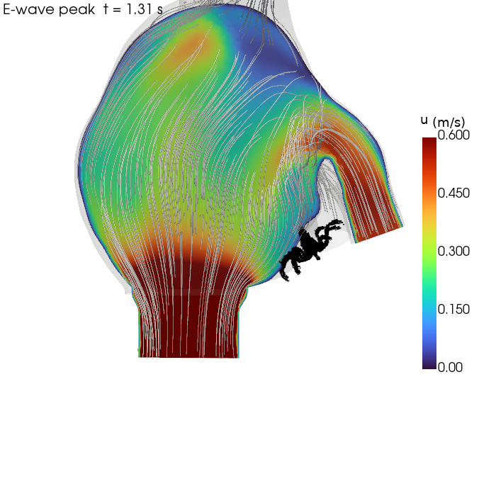
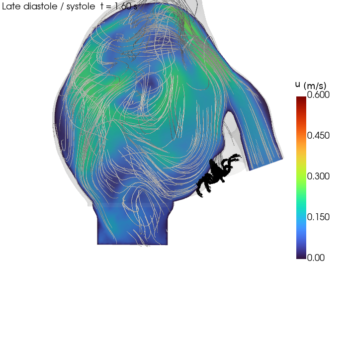
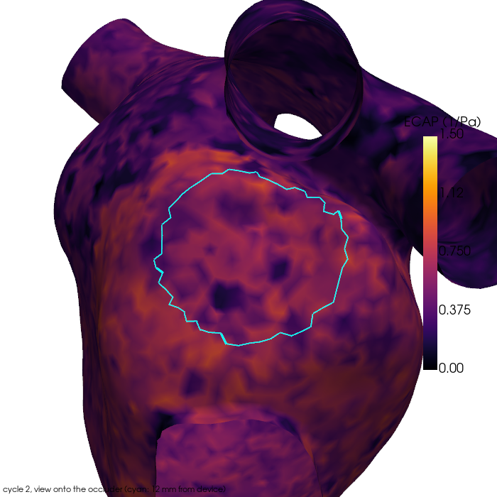
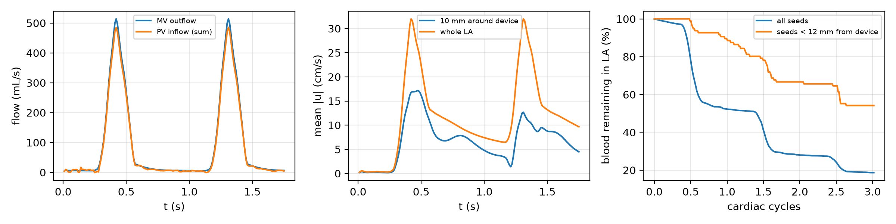

DRT on cardiac CT appears as hypo-attenuated tissue on the atrial surface of the device (hypo-attenuated thickening, HAT), in contrast with the opacified blood pool [4,5]. In this scan, contrast blood measures {{HU_BLOOD}} HU and the nitinol frame >700 HU (up to 3071 HU). We sampled {{N_LINES}} lines parallel to the device axis across the hub and the struts and measured the low-attenuation layer (<250 HU) between blood and metal. Its median thickness is {{HAT_MEDIAN}} mm; only {{HAT_FRAC3}} % of lines reach ≥3 mm, at isolated points (maximum {{HAT_MAX}} mm). The appendage behind the device is not opacified (40–100 HU), so the occlusion is complete and there is no peri-device leak (Fig. 1). The device has a central hub with ~10 radiating struts and a 22–23 mm frame, which is consistent with a WATCHMAN occluder; its wireframe was segmented separately (bonus STL).
| Step | What we did (Case 1) |
|---|---|
| Segmentation | 3D Slicer Segment Editor on the contrast CT (0.45×0.45×0.3 mm): LA body, 4 PVs beyond the first branch and the mitral annulus; device and appendage excluded. Volume {{SEG_ML}} mL. |
| Surface mesh | Meshmixer cuts of the 4 PVs and the MV, placed on the CT LA–LV junction (MV cap {{MV_AREA}} mm², 28 mm), short cylindrical extensions, remesh. Degenerate triangles were removed and the mesh was checked: genus 0, no non-manifold edges, no self-intersections, cap edges 73–96°. The geometry was rotated so that the MV normal is −Z, because the motion profile acts along Z. |
| Volume mesh | Gmsh with Netgen optimisation: {{N_TETS}} tetrahedra (<500k). Max skewness {{SKEW}}; Fluent minimum orthogonal quality 0.13. |
| CFD (Fluent) | Transient, laminar Newtonian blood (1060 kg/m³, 3.5 mPa·s). PVs: pressure inlets with the teacher pressure profile (5–8.5 mmHg). MV: velocity profile (E-wave only, AF; peak 0.94 m/s), rigid-body longitudinal motion along Z (8.9 mm excursion). Wall and fluid deforming (diffusion smoothing + remeshing). Coupled solver, 2nd order, Δt = 0.01 s, 2 cycles (1.75 s); cycle 2 analysed. |
{{FLOW_TEXT}}




{{CONCLUSION_TEXT}}
Limitations. Rigid walls apart from the MV-driven deformation. Generic BC profiles. Newtonian, laminar flow. Only two cycles. Single mesh (a finer-mesh run was prepared for sensitivity). CT is a single static phase. The ECAP threshold comes from other vascular beds [3]. The CFD therefore gives a relative risk, while the CT is the evidence for whether a thrombus is present.